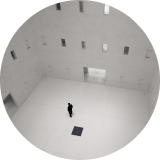

Научиться учиться
Какие современные и эффективные подходы к обучению вы можете использовать в своей жизни?
Узнать →
Главные проблемы в обучении
Ни в школе, ни в институте нас не учат тому, как правильно изучать материал. Мы готовимся к экзаменам и учим билеты. Мы тренируемся решать однообразные задачи, чтобы лучше сдать тест, но часто в итоге это не дает нам реального знания. Зубрежка быстро выветривается и не приносит пользы.
Вывод: учиться тоже нужно уметь, но почему-то этому мало где учат. Что с этим делать?
Конкретные техники и упражнения помогают изменить подход к обучению, сделать его эффективным и захватывающим. Эти же техники применяются на примере обучения в Практикуме.
Техники обучения
Пять практик от Барбары Оакли

Два вида внимания
Глубокие знания возникают, если чередовать сфокусированное и рассеянное мышление.
Recall
Вспоминайте изученное — это позволит соединить разрозненные порции памяти.

Интерливинг
Изучайте несколько навыков одновременно, они обогощают друг друга.

Вопросы
Слушая преподавателя, придумайте хороший вопрос, который вас действительно волнует.
Иллюзия компетентности
Повторите про себя, запишите, расскажите другу: вам только кажется, что вы владеете новой темой.
Цифры и факты
Про учёбу и мозг
86 миллиардов
Число нейронов в мозге человека
2,1 миллиарда
Число нуждающихся в повышении квалификации
Всемирный Банк, 2017
1000 терабайт
Число ответственных за обучение нервных синапсов у взрослого человека
420 миллионов
Число взрослых людей моложе 25 лет, не имеющих образования для трудоустройства
17-20 лет
ЧПик обучаемости
1885 год
Открытие кривой забывания
Принципы обучения
От Джоша Кауфмана
1
Выберите привлекательный проект.
2
Сосредоточтесь на каком-то одном навыйке.
3
Опредилите целевой уровень мастерства.
4
Разбейте навык на элементы.
5
Приготовте всё необходимое для занятий.
6
Устраните препядствия для занятий.
7
Выделите специальное время для занятий.
8
Создайте быстрые петли обратной связи.
9
Занимайтесь по расписанию, короткими интесивными интервалами.
10
Уделяйте внимание количеству и скорости.
Полезные ресурсы
Больше материалов о техниках и лайфхаках обучения